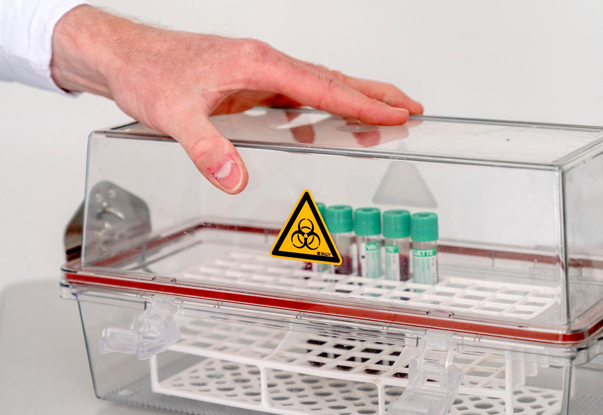

Introduction
In the previous chapter we already discussed some controls and calibrators of the real-time PCR assay. In this chapter we will elaborate more on technical quality indicators of the assay, among others the validation of the test and continued control assessment, for example with proficiency testing.
We will NOT discuss here the quality management aspects such as facilities, safety, assessments and so on.
Learning Objectives
By the end of this chapter, you will be able to:
- Setup a technical control system for your assay, containing
- Use of correct assay controls
- Interpret trend analysis
- Use of correct reference materials
- Perform proficiency testing
- Know when reagent lots need to be tested
- Describe the main Standard Operation procedures
- Recognize non-conformities and act upon these.
Good luck and enjoy this chapter.
Chapter 1: When Quality Fails in CCHF Diagnosis
(based on an actual case from Iran, adapted for this course)
Dr. Ayşe Demir, an infectious disease physician at a regional hospital in eastern Turkey, received a critical call from her laboratory on a Friday afternoon. A 42-year-old livestock farmer had presented to the emergency department with high fever (39.5°C), severe headache, myalgia, and thrombocytopenia (platelet count: 45,000/µL). He reported removing multiple ticks from his body three days earlier while working with sheep.
Given the endemic nature of CCHF in the region and the classic presentation, Dr. Demir immediately ordered CCHF real-time RT-PCR testing on the patient's serum sample. The laboratory used a commercial RT-PCR kit targeting the S-segment of the CCHFV genome. Within 6 hours, the result came back: POSITIVE for CCHF virus with a Ct value of 34.
The patient was isolated and treated for CCHF, his family and healthcare workers were placed under surveillance, and public health authorities mobilized.
However, the patient's rapid clinical recovery contradicted the typical CCHF course. Repeat CCHF PCR and serology were negative, while Anaplasma phagocytophilum PCR returned positive.
Further investigation revealed a critical quality control failure: On the same day the farmer's sample was processed, the laboratory prepared high viral load CCHF-positive control sample (from a confirmed case with viral load >108 copies/mL) in the same Laminar Flow Cabinet. Cross-contamination during manual extraction (high-load positive control processed before the patient) was the likely culprit—pipette and spatial workflow lapses had not been mitigated. Negative extraction controls had not been included that day.
The outcome: The patient underwent unnecessary CCHF treatment and isolation. There was delayed diagnosis (and therapy) of his actual illness, unnecessary public health interventions, and considerable distress to all involved.
The true diagnosis was human granulocytic anaplasmosis, a tick-borne infection with overlapping symptoms but completely different treatment requirements and prognosis.
Multiple Choice Question 1
Which of the circumstances explains the incorrect CCHF RT-PCR diagnosis in this case?
Multiple Choice Question 2
Which of the following procedural adjustments, based on the described incident details, would have helped prevent this quality control failure? (Select one or more.)
Chapter 2: The Pre-Analytical Phase
The first step of quality control happens before the main test begins, before the sample reaches our instruments. This is a critical step as studies have shown that the majority of laboratory errors occur here.
Proper Collection and Labeling
Is the sample labeled? Preferably with at least two unique patient identifiers to make sure that we are testing the right person.
Did the sample arrive in the correct and undamaged tube? Are the samples safe from contaminations? For example, preservatives such as alcohol, heparin and formaldehyde inhibit the PCR.
Are the laboratory and technicians ready to process the samples?
Once the samples have been accepted for the analysis, the process of analytical testing can begin.

Chapter 3: Assay Controls
Federal regulations require the use of controls, and they are very specific for molecular amplification tests.
Control procedures must be established to monitor the test system over time and detect immediate errors due to factors like test system failure, poor environmental conditions, or operator error.
Essential Components of the Real-Time PCR Control System:
- Internal control
- Positive control
- Negative control
- Blank control
- Quantitative control
Internal control is a nucleic acid sequence that is amplified alongside the target nucleic acid in the same reaction. It is differentiated from the target amplicon using a sequence-specific probe tagged with a reporting dye that fluoresces at a different wavelength. The IC provides intelligence to call a test "indeterminate" rather than "negative" if it fails to amplify, indicating chemical system inhibition. Amplification of an IC (either endogenous or spiked) is recommended to ensure inhibitors are not interfering with the assay.
Positive control: Used to demonstrate the ability of the test to detect a target when it is present (analytical sensitivity). It should contain a clinically relevant amount of analyte. Both high and low positive controls (near the limit of detection) should be used.
Negative control: A known negative clinical specimen run alongside the unknown sample, but with internal control.
Blank control: The blank should contain the complete reaction mixture except nucleic acids (adding used elution buffer). Its use is mandatory to monitor for carry-over contamination (amplification contamination).
INTERMEZZO: UNG-Digestion PCR
"Uracil-DNA glycosylase (UDG) or UNG-digestion PCR." In this approach, deoxyuridine triphosphate (dUTP) is incorporated into PCR reactions in place of deoxythymidine triphosphate (dTTP), creating amplicons that contain uracil instead of thymine. Before performing the PCR, the reaction mixture is treated with uracil-N-glycosylase (UNG or UDG), which digests or removes any uracil-containing DNA. This step eliminates carryover contamination from previous PCRs, as only newly synthesized DNA (without uracil) will be amplified in the reaction. This technique is often referred to as "UNG-digestion" or "carryover prevention PCR" or simply "dUTP/UNG system." It is used for digesting potential previous reaction products to prevent contamination, making it highly valuable for sensitive applications.
Click the "Next" and "Previous" buttons to navigate through the UNG-Digestion PCR process.
Quantitative control: Quantitative procedures must include two control materials of different concentrations (calibrators) in each run.
Chapter 4: Trend Analysis
If the sample contains substances that inhibit the PCR, it can be detected with the Internal Control (IC). When we purify nucleic acids, we remove proteins and other substances that could interfere with the test. Any left-over inhibitors will interfere with the IC.
Think of the IC as a "buddy" that goes through the entire extraction and amplification process alongside the patient's own nucleic acids. If the patient's sample is truly negative for the target we're looking for, the IC must still amplify successfully. If the IC "buddy" doesn't show up at the end of the test, or shows up late, it tells us that something went wrong along the way—either the extraction failed or something in the sample inhibited the PCR reaction.
How do you know an IC-buddy in one of the patient samples 'is late'? For this, we can compare the IC-buddy in our negative extraction control (no patient material added) with our IC-buddies in the clinical samples.
The same applies for our positive controls. Keeping track of Ct-values from positive controls can help you to analyse the root cause of false positive/negative outcomes. How? We will explain this next.
Routine Trend Monitoring
One specific method utilized in laboratories for monitoring Ct values is the implementation of Levey-Jennings plots, and applying Westgard rules on the plots.
Key concepts for Levey-Jennings charts:
- Mean Value
- Standard Deviation (SD)
- Coefficient of Variation (%CV)
- Westgard rules
Learn more: Levey-Jennings Charts Guide
Interactive Levey-Jennings Plot
Below is an interactive Levey-Jennings chart showing Internal Control (IC) Ct values over time. The chart displays control limits at ±1 SD (warning zone) and ±2 SD (failure zone).
Run Information
Hover over data points to view details
Testing of New Reagent Lots
When we receive a new batch (lot) of reagents, we test it side-by-side with the old lot to confirm it performs identically before we put it into clinical use.
Quiz: Levey-Jennings Control Replacement
Question: Look in the Levey-Jennings plot above. After run number 44, the control is replaced. What could be the reason for this decision? Tick the correct answer(s).
Chapter 5: Proficiency Testing
Proficiency Testing
External Quality Surveillance (Inter-Laboratory Comparison)
External Quality Control (EQC): EQC samples are periodically run alongside routine assays to verify the integrity of the reagent and the successful extraction of nucleic acid, often assessed based on the Ct value compared to an endogenous control.
Several times a year (and at a minimum, twice per year), an external, independent agency sends us a panel of "unknown" samples to test. We don't know the expected results. We process these samples exactly like patient specimens and send our results back. This process, known as proficiency testing, is a critical, objective way to verify that our entire testing system—our people, our methods, and our machines—is producing accurate results that are comparable to those from other top labs.
Commercial Kits versus In-House Assays
Commercial kits require Verification: The purpose is to confirm that the test performs as expected according to the manufacturer's established performance characteristics, in the laboratory's specific environment.
In-house assays require Validation: Here the purpose is to establish the test's performance characteristics from scratch, as no performance data is supplied by a manufacturer. Performance characteristics that need to be tested are Accuracy, Precision, Analytical sensitivity (lower limit of target detection), Reportable range of test results, reproducibility and analytic specificity.
Where to Find Reference Material?
Use preferably deactivated virus instead of clean Nucleic Acid constructs such as plasmids or cDNA. A positive control has to simulate NA extraction from real-virus particles. For example if during extraction proteinase-K was not added, this would be visible in the positive virus control, in contrast when using clean cDNA.
Sources for reference materials:
- Commercial kits as described above contain well defined positive controls.
- Ask other laboratories, reference labs, together with their results. Check which platform and extraction method they are using.
- Use positive samples from a proficiency testing panel.
Chapter 6: The Post-Analytical Phase
Interpreting the Run
Results must be reported accurate, clear, and provide the necessary context for the ordering physician.
Qualitative Reports: These provide a simple "Positive/Detected" or "Negative/Not Detected" answer. A Ct-value often doesn't mean much to a physician.
To help physicians interpret a negative result, the report must always include the test's Limit of Detection (LOD)—the smallest amount of the target the test can reliably detect.
Quantitative Reports: These provide a numerical value, such as a viral load (e.g., 50,000 copies/mL). These reports must state the test's analytic measuring range. A result can be reported as:
- A specific number (if within the range) with the actual quantity along with the unit (for example copies per ml)
- "Above limit of quantification/measuring range"
- "Below the limit of quantification, not detected, not accurately quantifiable, or whatever is applicable"
The laboratory can also recommend additional serological testing if two weeks have passed since the onset of symptoms.
Module Summary
Congratulations on completing Module 4: Quality Control and Quality Assurance!
Summary content to be developed...